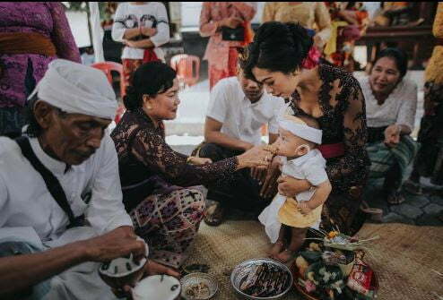
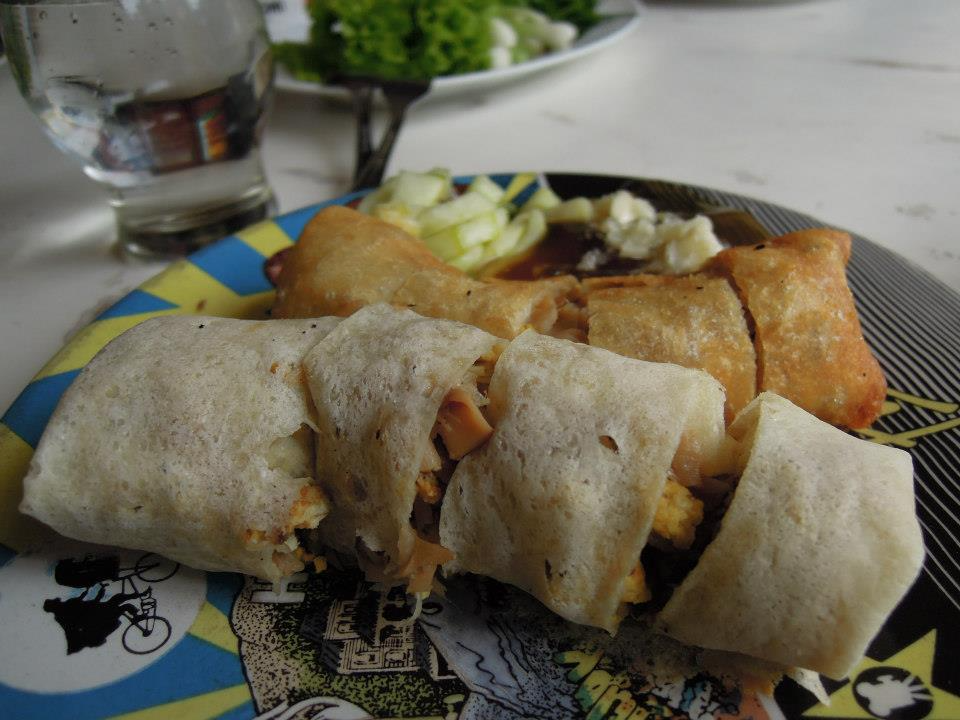

Sumatra
Nusa Tenggara
Maluku
Papua
Jawa Tengah
Jawa Tengah adalah sebuah wilayah provinsi di Indonesia yang terletak di bagian tengah Pulau Jawa. Ibu kotanya adalah Kota Semarang. Provinsi ini berbatasan dengan Provinsi Jawa Barat di sebelah barat, Samudra Hindia dan Provinsi Daerah Istimewa Yogyakarta di sebelah selatan, Provinsi Jawa Timur di sebelah timur, dan Laut Jawa di sebelah utara. Luas wilayahnya 32.800,69 km², atau sekitar 28,94% dari luas pulau Jawa. Provinsi Jawa Tengah juga meliputi Pulau Nusakambangan di sebelah selatan (dekat dengan perbatasan Jawa Barat), serta Kepulauan Karimun Jawa di Laut Jawa. Penduduk Jawa Tengah berdasarkan Badan Pusat Statistik tahun 2021 berjumlah 36.516.035 jiwa dengan kepadatan 1.113,00 jiwa/km²
Informasi Umum
| Nama Provinsi | Kode Wilayah | Kode Internasional | Singkatan Umum | Ibu Kota | Hari Jadi | Lambang |
|---|---|---|---|---|---|---|
| Jawa Tengah | 33 | ID-JT | Jateng | Semarang | 15 Agustus 1950 |  |
Budaya
Rumah Adat Joglo, Rumah rumah tradisional masyarakat Jawa satu ini merupakan saah satu ikon yang terkenal. Desain rumah joglo sangat khas dengan bentuk limas yang bangunannya didirikan dari kayu jati. Rumah ini memiliki area-area yang khusus yang dinamakan senthong tengen, senthong kiwa, dan senthong tengah. Dalam rumah tradisional ini, terdapat tiang utama dan tanah yang dipupuk lebih tinggi dari sekitarnya. Keduanya adalah pondasi cerminan dari keharmonisan antara alam dan manusia, serta manusia dengan manusia lainnya. Pondasi Rumah Joglo juga erat dengan kepercayaan Kejawen yang banyak dianut masyarakat Jawa.
Kebaya dikenal di berbagai daerah sebagai sebutan untuk pakaian adat yang dikenakan oleh wanita. Bedanya adalah gaya atau pakem yang digunakan. Kebaya khas Jawa Tengah tentu memiliki ciri khas tersendiri, terutama dengan bentuk blus sederhana berlengan panjang, yang membuat munculnya sedikit kesan misterius dari pemakainya. Adapun bahan yang digunakan kebaya khas Jawa Tengah adalah beludru atau kain sutera. Sementara bagian dalam kebaya akan dilapisi kemben.
Gambyong merupakan salah satu bentuk tarian Jawa Tengah klasik yang berasal dari wilayah Surakarta dan biasanya dibawakan untuk pertunjukan atau menyambut tamu. Gambyong bukanlah satu tarian saja melainkan terdiri dari bermacam-macam koreografi, yang paling dikenal adalah Tari Gambyong Pareanom (dengan beberapa variasi) dan Tari Gambyong Pangkur (dengan beberapa variasi). Meskipun banyak macamnya, tarian ini memiliki dasar gerakan yang sama, yaitu gerakan tarian tayub/tlèdhèk. Pada dasarnya, gambyong dicipta untuk penari tunggal, tetapi sekarang lebih sering dibawakan oleh beberapa penari dengan menambahkan unsur blocking panggung sehingga melibatkan garis dan gerak yang serba besar.

Tari Saman merupakan salah satu media untuk menyampaikan pesan atau dakwah. Tarian ini mencerminkan pendidikan, keagamaan, sopan santun, kepahlawanan, kekompakan dan kebersamaan.

Tari Seudati adalah salah satu tarian tradisional yang berasal dari daerah Aceh. Tarian ini biasanya ditarikan oleh sekelompok penari pria dengan gerakannya yang khas dan enerjik serta diiringi oleh lantunan syair dan suara hentakan para penari.
Bahasa resmi masyarakat Jawa Tengah adalah bahasa nasional, yakni Bahasa Indonesia. Sedangkan bahasa sehari-harinya adalah bahasa Jawa, yang terdiri dari berbagai dialek. Antara lain, bahasa Jawa yang diucapkan di Banyumas, Tegal, Pekalongan, Pati dan daerah Surakarta. Hanacaraka ( Huruf Aksara Jawa ) memiliki 20 huruf dasar. Sebagai pendamping, setiap suku kata memiliki pasangan kata untuk mengikuti suku kata mati atau tertutup. Di dalam aksara Jawa juga dikenal huruf kapital atau Aksara Murda untuk menulis nama gelar, nama diri, geografi atau lembaga. Struktur masyarakat Jawa dapat dilihat dari penggunaan kosakata dalam berkomunikasi antara satu orang dengan orang lainnya. Pada waktu menggunakan bahasa daerah, seseorang harus memperhatikan dan membedakan keadaan berdasarkan usia maupaun status sosialnya.
Ditinjau dari tingkatannya, ada dua macam bahasa Jawa , yakni bahasa Ngoko dan bahasa Krama. Bahasa Ngoko memiliki tingkatan paling rendah dan kurang sopan. Bahasa ini digunakan oleh anak-anak ke temen-teman sebayanya atu terhadap mereka yang golongan usianya lebih muda. Sedangkan bahasa Krama adalah tingkatan bahasa yang lebih halus dan sopan. Pengguna bahasa krama mencerminkan budi pekerti.

Upacara Wetonan adalah upacara adat suku Jawa yang populer pada daerah Jawa Tengah. Wetonan mempunyai arti keluar, dalam upacara ini merupakan peringatan bagi lahirnya seseorang. Peringatan ini bermaksud untuk mendoakan bagi sang bayi agar terhindar dari berbagai bahaya dan mendoakan memiliki panjang umur dan juga keberkahan. “Slametan iki kanggo dongakne wong sing di ton; i ben slamet, waras, pinter lan opo wae sing dilakoni iso lancar” hal ini memiliki arti dalam bahasa indonesia yaitu slametan wetonan memiliki makna atau tujuan dalam mendoakan orang yang diwetoni atau diperingati dalam hari lahir tersebut supaya Tuhan Yang Maha Esa memmberikan limpahan keselamatan, kesehatan diri, kepintaran dan harapan pada hal-hal atau apapun yang dilakukan dapat lancar tanpa suatu kendala.
Senjata keris merupakan salah satu senjata paling terkenal dibandingkan senjata tradisional lainnya di Jawa Tengah. Keris di zaman dahulu digunakan sebagai identitas diri. Terdapat perbedaan bentuk keris berdasarkan tingkatan sosialnya. Keris raja-raja akan berbeda bentuknya dengan keris prajuritnya. Senjata ini memiliki berbagai macam bentuk dari mulai yang terdapat lekukan dengan jumlah ganjil seperti 3,5,7 hingga yang tidak memiliki lekukan.

Gambang adalah alat musik pukul tradisional Jawa Tengah khas Indonesia bagian dari Gamelan yang dibuat dari bilah-bilah kayu maupun bambu, biasanya terdiri dari 16 hingga 25 bilah yang dimainkan dengan alat pukul. Sejak 2021, seluruh instrumen Gamelan (yang mana juga mencakup Gambang) secara resmi diakui oleh UNESCO sebagai salah satu Masterpieces of the Oral and Intangible Heritage of Humanity yang berasal dari Indonesia.
Cublak-cublak Suweng adalah lagu daerah Jawa Tengah. Lagu tradisional ini digunakan sebagai pengiring dalam permainan tradisional Jawa yang memiliki nama yang sama yaitu Dolanan Cublak-cublak Suweng. Permainan tradisional cublak-cublak suweng biasa dimainkan oleh anak-anak desa di pulau Jawa, khususnya di Jawa Tengah.
Kuliner
Lumpia semarang adalah makanan semacam rollade yang berisi rebung, telur, dan daging ayam atau udang. Cita rasa lumpia semarang adalah perpaduan rasa antara Tionghoa dan Indonesia karena pertama kali dibuat oleh seorang keturunan Tionghoa. Makanan ini mulai dijajakan dan dikenal di Semarang ketika pesta olahraga GANEFO diselenggarakan pada masa pemerintahan Presiden Soekarno.
Mi ongklok adalah mi rebus khas kota Wonosobo, Jawa Tengah. Mi rebus ini dibuat dengan menggunakan kol, potongan daun kucai, dan kuah kental berkanji yang disebut loh. Mi ini banyak dijajakan di berbagai warung, rumah makan, maupun dijajakan keliling memakai gerobak di kota tersebut. Pendampingnya biasanya adalah sate sapi, tempe kemul, serta keripik tahu. Sebelum disajikan mie ini diramu dengan sayuran kol segar dan potongan daun kucai.

Destinasi Wisata
Candi Borobudur terletak di Kabupaten Magelang, Jawa Tengah, Indonesia walopun banyak sekali wisatawan baik itu dari mancanegara maupun domestik yang lebih mengenal Candi Borobudur indentik dengan kota Yogyakarta. Dalam sejarahnya Candi Borobudur dibuat dengan tujuan sebagai tempat ibadah bagi kaum Budha pada jaman Dinasti Syailendra. Stupa Candi Borobudur raksasa yang sangat terkenal di dunia menjadi daya tarik utama wisatawan untuk berkunjung. Bangunan Candi Borobudur sendiri pada dasarnya di bagi menjadi 10 tingkat dalam bentuk punden berundak. Banyak orang mengenal punden berundak adalah desain bangunan yang sering digunakan masyarakat Indonesia pada jaman dulu.

Lawang Sewu adalah bangunan perkantoran yang terletak di seberang Tugu Muda, Kota Semarang, Jawa Tengah, Indonesia, yang dibangun sebagai kantor pusat Nederlandsch-Indische Spoorweg Maatschappij (NIS). Bangunan ini berstatus sebagai aset Kereta Api Indonesia (KAI) karena merupakan buah dari perebutan NIS oleh Djawatan Kereta Api Republik Indonesia (DKARI) pada masa Perang Kemerdekaan. Saat ini bangunan tersebut dijadikan sebagai museum dan galeri sejarah perkeretaapian oleh Unit Pusat Pelestarian dan Desain Arsitektur dan KAI Wisata.